| 日付 | 2026年11月21日（土） - 2026年11月22日（日） | ||||
|---|---|---|---|---|---|
| 山域 | 駿河・身延 | ||||
| メンバー | 家族（妻） | ||||
| 山行形態 | 1泊2日小屋泊 | ||||
| アクセス | 電車、タクシー、バス | ||||
| ルート (Map) |
|
2日目
5時半起床。朝勤の途中で抜けて、朝陽を見に行く。
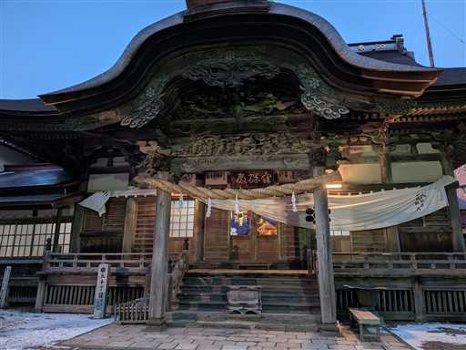
今日も随神門の向こうに富士山が見えている。
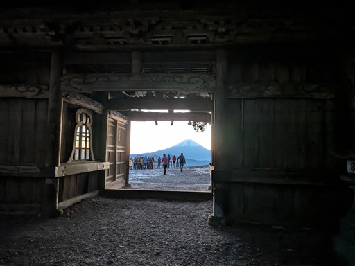
夜明け前の富士山。
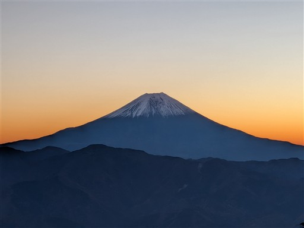
左が愛鷹山、右が駿河湾。
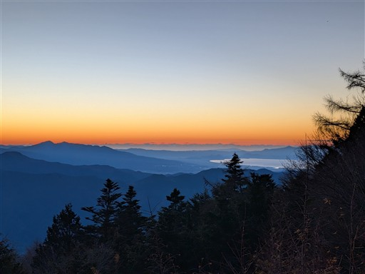
ちょうど愛鷹山の上から御来光。素晴らしい景色だ。
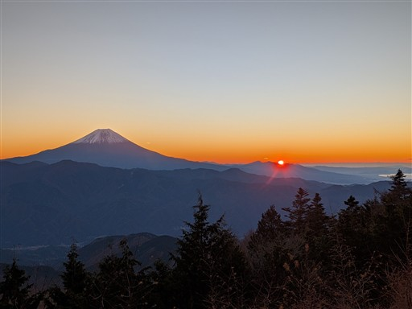
周囲の雪が赤く輝く。
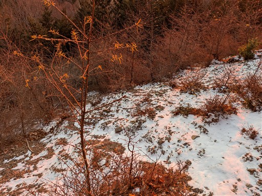
寒い中、多くの登山者が集まっている。
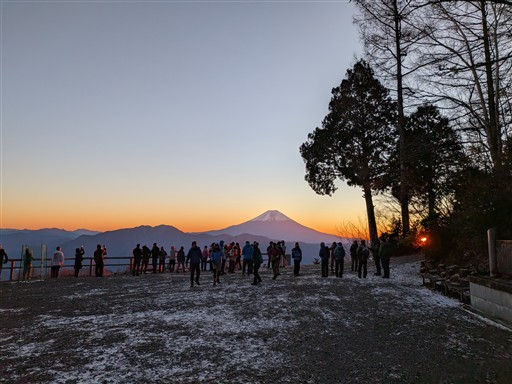
本堂の上の尾根がモルゲンロートに染まっている。
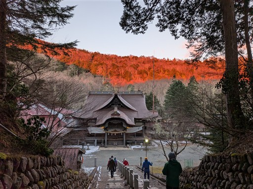
朝食は7時頃からなのだが、6時半からにしていただいた。
もっと早くしてもらっているグループもあるし、臨機応変に対応いただける。
朝食を取ったら出発。
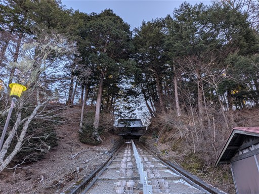
もう太陽は高く昇っている。
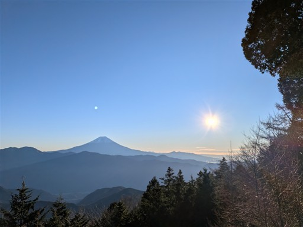
七面山に向かう道は殺風景。唐松林が並んでいる。
信者の方はこちらの方にはあまり来ないようだ。
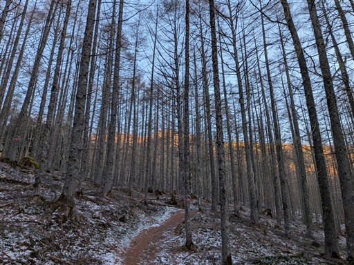
ナナイタガレ。凄まじい規模の崩落地だ。
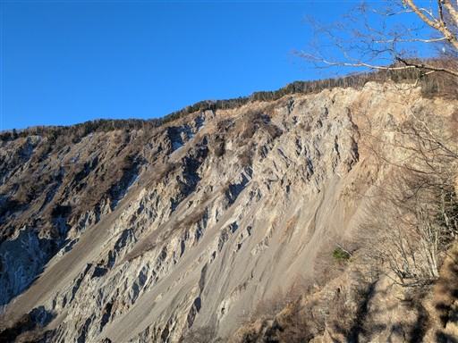
日陰には少し雪が残っている。
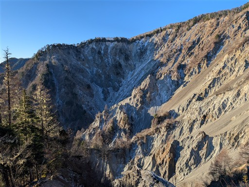
この辺りは霜柱が大きく育っている。
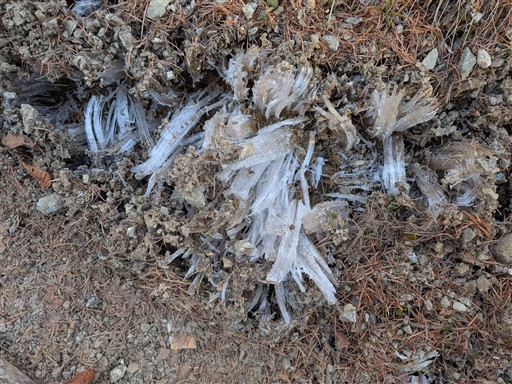
七面山の山頂に到着。標高1983m。
樹林に覆われて展望がない冴えないピークだ。
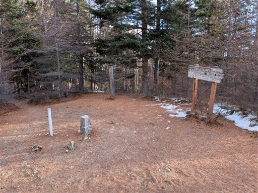
その先にある七面山最高地点。標高1989m。
ここにも小さな山頂標識がある。ここが七面山の山域で一番標高が高い。
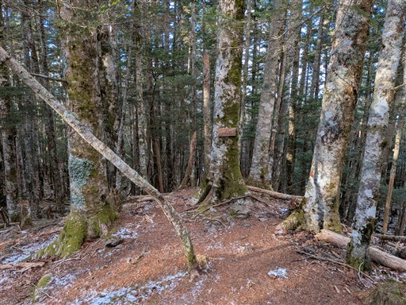
その先の希望峰目指して歩を進める。サルオガセが風にたなびいている。
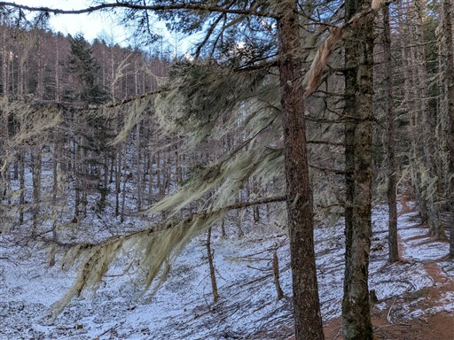
希望峰に到着。
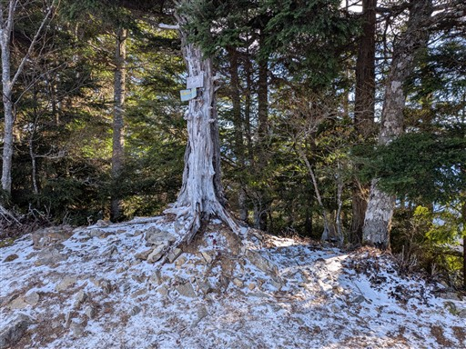
ここからは、これまで見えなかった西側の展望が広がる。
しかし残念ながら雲が出ていて南アルプスの姿はあまり見えない。
見えているのは白峰南嶺で、右に見える山が笊ヶ岳だ。
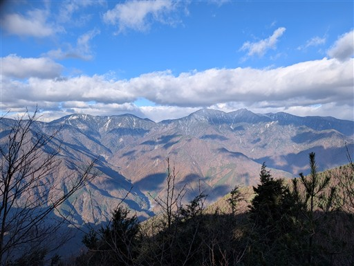
多くの人は希望峰まで。ここから先は踏み跡が少なくなる。
ピンクテープは豊富にある。
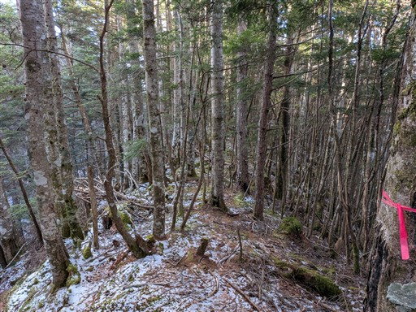
苔は雪に覆われて寒々しい景色だ。
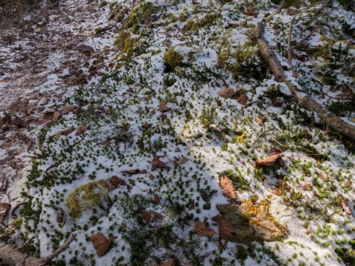
倒木地帯にやってくる。この稜線は倒木が多いらしい。ここはまだ序の口。
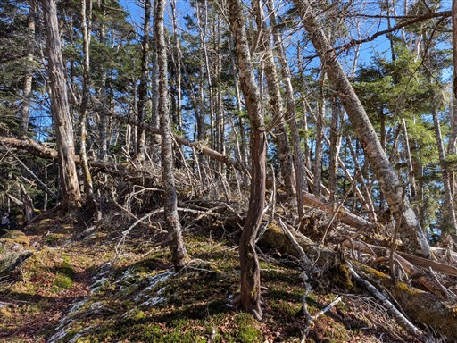
1965m三角点峰を通過。七面山からあまり標高が変わっていない。
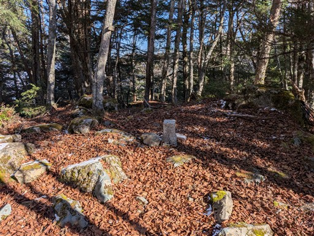
この辺りが特に倒木が多い所。立っている木も皆枯れている。なぜだろう？
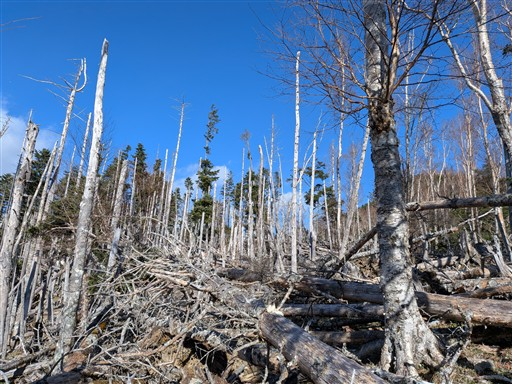
登山ルートは倒木を迂回したり乗り越えたりしている。
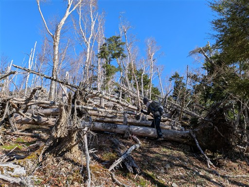
この辺りは地形が複雑。二重山稜や緩斜面など、いろいろ出てくる。
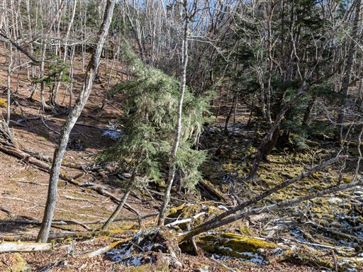
久々に見た標識。ほぼ何が書いてあるか分からない。
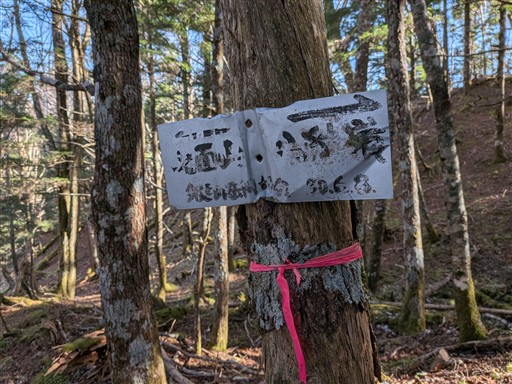
前方に目指す八紘嶺の姿が見えてきた。
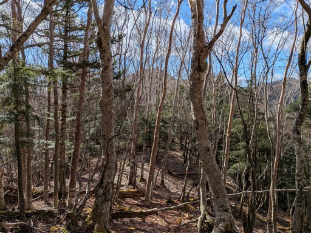
祠の跡のようなものが見られる。この辺りが四ノ池なのだろうか？
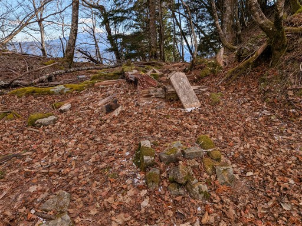
八紘嶺の山頂に到着する。標高1918m。18年振りの訪問だ。
時間が想定よりだいぶ巻いているため、ここで昼食休憩を取る。
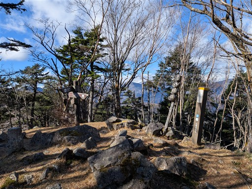
昼食を取ったら出発。ここからは比較的人通りの多い道だ。
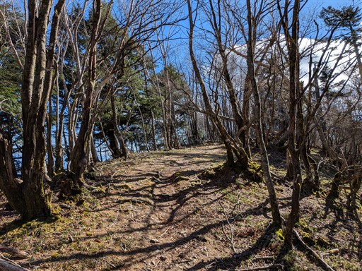
少し歩くと、突然視界が大きく広がる。
真中を蛇行しているのは安倍川、その向こうの太平洋に注ぐところまで見えている。
かなり彫の深い山域だ。安倍川左岸にはかつて歩いた安倍奥東山稜が連なっている。
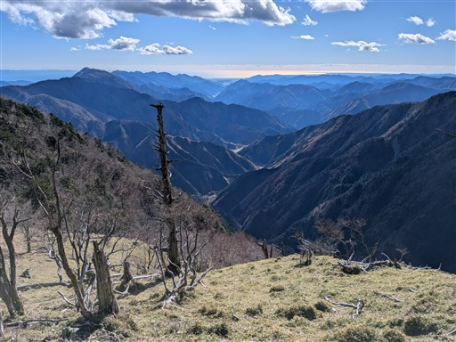
こちらには山伏の頭が見えている。
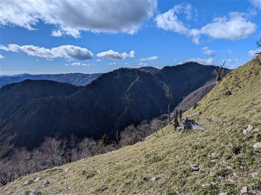
気持ちの良い尾根道が続く。
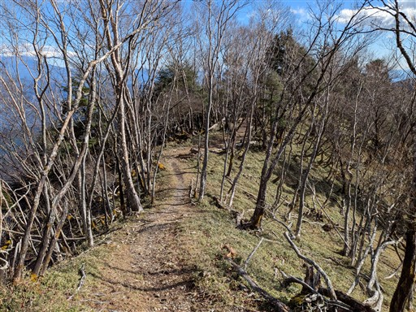
しばらく歩くと急斜面の登山道になる。
滑りやすい道で歩きにくい。
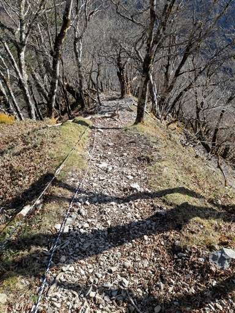
ジグザグのトラバース道。斜面が急で結構危険な場所だ。
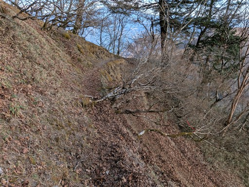
ロープを使って下りるところもある。
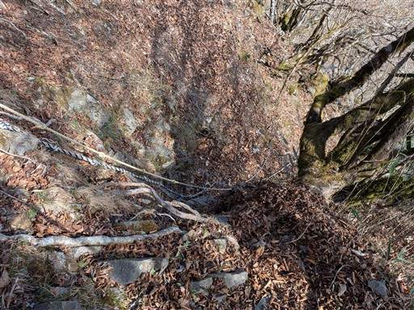
この辺りは落ち葉が大量に堆積していて歩きにくい。
案外、難易度の高い登山道だ。
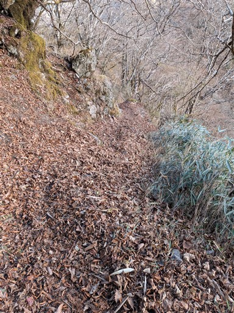
振り返ると、七面山の稜線が見えている。
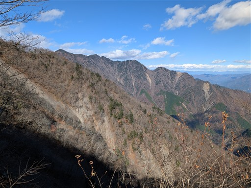
車道に出てくる。ここはまだ中腹で、ここからさらに登山道を下っていく。
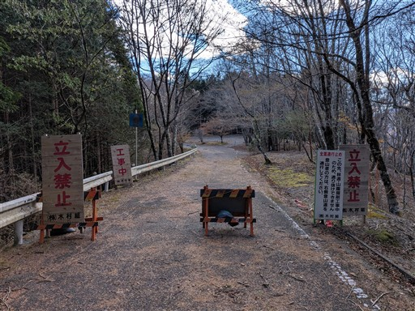
モフモフの苔。
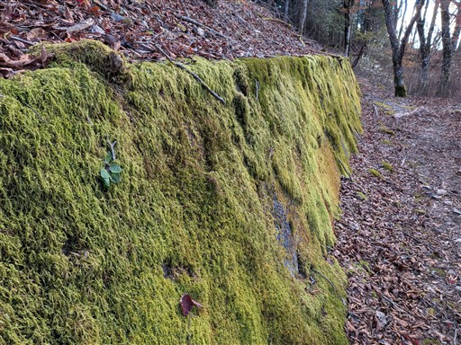
ここからは植林地帯のつまらない道が続く。
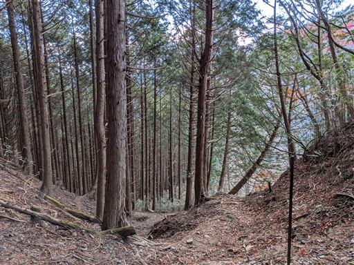
植林地帯を抜けると紅葉が広がる。
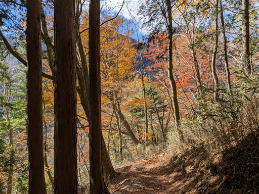
無事下山。ここから梅ヶ島温泉はすぐ。
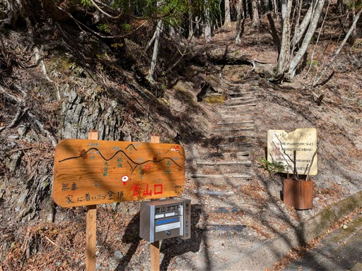
周囲に広がる見事な紅葉。
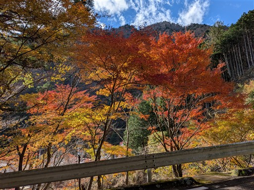
紅葉を眺めながらのんびりと車道を下る。
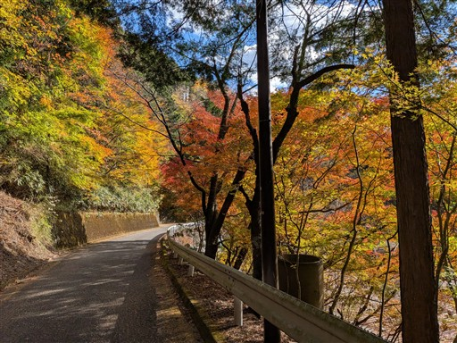
梅ヶ島温泉まで下りてくる。
目の前の梅勲楼という旅館は2012年に泊まったことがある懐かしい場所だ。
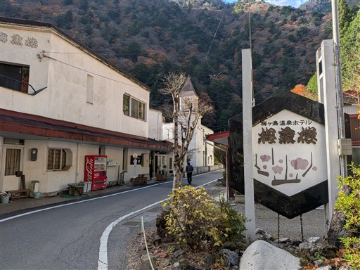
梅ヶ島温泉バス停。標高860m。
バスは一日二本。15:31まで1時間45分あるので、温泉に行ってのんびりすることにする。
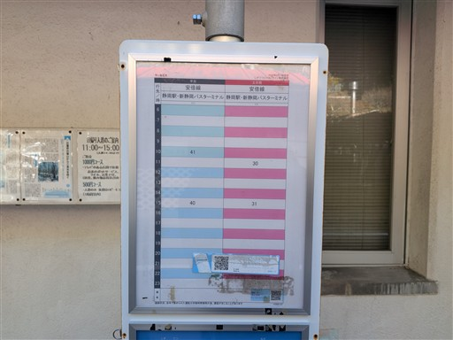
メイン道路に出ると、なんど駐車場待ちの車が並んでいる。
紅葉の時期の3連休とはいえ、これほど混み合うとは思わなかった。
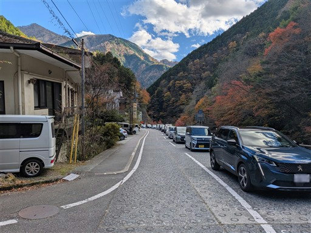
安倍川に架かる湯橋を渡って湯滝を見に行く。
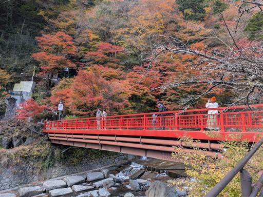
安倍川の流れ。安倍川の最上流部なのだが、結構人工的な川になっていてちょっと残念。
この川は太平洋に注ぐまでダムがない。
湯滝。流れているのは温泉なのだろうか？
あまり温度は高そうに見えない。
温泉に湯を引くパイプが並んでいる。
梅ヶ島温泉街を見下ろす。小さな小さな温泉街だ。
温泉街から見上げる山。なかなか迫力がある。
八紘嶺方面だとは思うが、どの辺りが見えているのだろうか？
観光を終えたら湯元屋で温泉に入る。
源泉掛け流しの良い湯だが、ちょっと湯量が足りないのと、かなり狭かった。
温泉に入ったらバスに乗る。長いバス旅だ。
1時間45分かかって静岡駅に着く。お魚総本家で夕飯をとり、新幹線で帰宅する。
七面山は全般的には地味な山だったが、敬神院でのお勤めや御来光など良い体験ができた。
歩いて見たかった七面山～八紘嶺の登山道は倒木が印象的で
展望の広がらない渋い尾根ではあるが、歩き応えのある良い尾根道だった。
八紘嶺の先から広がった安倍川周辺の山々の展望も印象的だった。